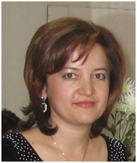

Руководитель отдела международных связей, Доктор наук
Бабаханова Зебо Абдуллаевна

Доктор наук кафедры «Технология силикатных материалов, редких и благородных металлов» Ташкентского химико-технологического института Руководитель отдела международных связей ТХТИ Кандидат технических наук по специальности «Технология силикатных и тугоплавких
неметаллических материалов».
С 2000 г. Доцент.
С 2019 г. Доктор наук.
Автор более 100 научно-методических работ, в том числе 74 научных и 30 учебно-методических работ. После опубликования диссертации опубликовала 40 научных работ, из них
6 - в зарубежных изданиях, 34 – в сборниках Республиканских и международных конференций.
В совершенстве владеет английским языком. В 2014 году по гранту № 2013-2718 повышала квалификацию по научно-педагогической деятельности в
Университете Падуи, Италия.
С 2008 года работает в составе научно-исследовательских групп над выполнением Государственных прикладных научно-исследовательских проектов, выполняемых в ТХТИ:
1) “Стеклокерамические композиционные
материалы на основе горных пород Узбекистана”- с 2010 года выполняла функции руководителя проекта (2009-2011 г.г.).
2) “Кислотостойкая керамика на основе отходов промышленности Узбекистана и минеральных ресурсов”- член ВКК (2009-2011
г.г.)
3) “Производство графитсодержащих керамических материалов на основе кварц-графитовых сланцев проявления Рупат
Сурхондарьинской области” – выполняла функции руководителя проекта (2012-2014 г.г.). 4) “Технология производства пеностекла на основе минеральных ресурсов и отходов промышленности Узбекистана” - член ВКК (2015-2017 г.г.).
В качестве руководителя проектов способствовала укреплению материально-технической базы института: был приобретен стационарный компьютер, ноутбук, лабораторное оборудование и химические реактивы для выполнения лабораторных работ.
Являясь ответственной по кафедре за работу с профессиональными колледжами и лицеями участвовала в заключении договоров с 4 профильными колледжами в г. Ташкенте и Ташкентской области.
Участвует в работе научно-технических
конференций, проводимых в ТХТИ, в частности в работе конференций:
в 2012-2013 г.г. в качестве руководителя секции “Технология неорганических материалов и промышленная экология” научно-практических конференций “Умидли кимёгарлар-2012,
“Умидли кимёгарлар-2013”;
в 2016 году участвовала в работе Международной научно-технической конференции «Актуальные проблемы инновационных технологий в развитии химической, нефте-газовой и пищевой промышленности» в качестве секретаря
секции «Технологии неорганических веществ»,
в 2017 году участвовала в работе научно-практической конференции с участием международных специалистов в качестве ответственного секретаря: «Актуальные проблемы усовершенствования системы
обеспечения качества в высших образовательных учреждениях» в рамках проекта «IQAT: Усовершенствование потенциала с применением институциональных систем обеспечения качества и типологии с использованием принципов Болонского процесса» в
рамках программы Erasmus+;
в 2018 году- участвовала в организации международных семинаров в качестве ответственного секретаря: «Семинара по обеспечению качества докторского образования», а также «Семинаров-тренингов для докторантов и научных руководителей»
в рамках проекта «UZDOC 2.0: Улучшение качества докторского образования в высших учебных заведениях Узбекистана» программы Эрасмус+ Европейского Союза .
За период с 2010 года под её научным руководством подготовлено 5 магистрантов
и 13 бакалавров.
Участвует в работе творческой группы по анализу и подготовке учебно-методических материалов для курсов переподготовки и повышения квалификации педагогических кадров, для направлений бакалавриата и магистратуры
по Ташкентскому химико-технологическому институту.
Активно участвует в жизни кафедры, поддерживает дружеские отношения со своими коллегами, выполняет различные общественные нагрузки. Отличается ответственностью, честностью, бескомпромиссностью
и способностью к работе в стрессовых ситуациях, к нахождению самостоятельных и неординарных решений при возникновении проблем.
Награды:
В 2014 году награждена Государственной наградой - медалью “Шухрат”.
Образование, повышение квалификации и стажировки:
01 сентябрь 1988–25 июнь 1993:
Химик-преподаватель
EQF level 5
Ташкентский государственный университет,Химический факультет
Ташкент
01 сентябрь 1993–03 март 2003:
Ph.D. in Technics
EQF level 6
Ташкентский химико-технологический институт
Ташкент
Диссертационная работа "Фазовые равновесия в системах "Mg3 (PO4) 2, Ca5 (PO4) 3F" и "Mg3 (PO4)2-CaAl2Si2O8" и получение на их основе стекок и ситаллов".
28 май 2012- 25 июнь 2012:
Университет мировой экономики и дипломатии, Ташкент
“Информатика и информационные технологии» учебные курсы, Сертификат № MO 059409.
02 декабрь 2013- 28 декабр 2013:
Ташкентский государственный технический университет, Ташкент
Курсы «Химическая технология», Сертификат № MO 1723843.
02 октябрь 2014- 20 ноябрь 2014:
Университет Падуи, Италия
Приглашенный ученый, Программа академической мобильности, Сертификат мобильности.
26 сентябрь 2016 - 3 октябрь 2016:
Чешский университет естественных наук Прага,
Программа академической мобильности, Сертификат мобильности.
9 октябрь 2017 – 13 октябрь 2017:
Политехнический университет Турина, Италия
Программа академической мобильности, стажировка. Сертификат мобильности.
3 январь 2018 – 13 январь 2018:
Университет Копенгагена, Дания. Программа академической мобильности.
Вверх